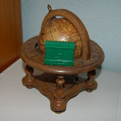
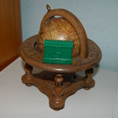

For information about the cast of Terror Island, see the Cast page.
If you would like information about the characters in the strip, feel free to view the Dramatis Personae.
Do you have other questions? Check out the FAQ.
 

Ben Heaton is photographer and co-writer for Terror Island. He currently resides in Palo Alto, CA and recently graduated from the University of Rochester with a B.S. in Mathematics.
Lewis Powell is co-writer of Terror Island and webmaster of terrorisland.net. Lewis graduated from the University of Rochester with a B.A. in Philosophy, and is currently living in Los Angeles, CA pursuing a Ph.D. in philosophy at the University of Southern California.
Contact Us!
Ben Heaton can be reached at:
terrorisland@factitious.net
— (e-mail)
factition
— (aim)
Lewis Powell can be reached at:
lewis.powell@gmail.com
— (e-mail)
ultralewis
— (aim)
Terror Island is a web-based photocomic by Ben Heaton and Lewis Powell. It’s named after the philosophic concept of an island which is distinct from all objects, including itself. Terror Island is updated thrice weekly; Mondays, Wednesdays and Fridays.
This website was composed using nano, vim, and a limited understanding of html. The images themselves were captured with a Nikon D50 digital SLR camera and adjusted using Adobe Photoshop. The font used in the comic is Gill Sans.